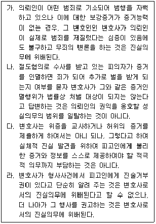
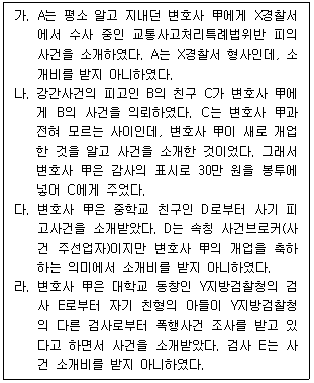
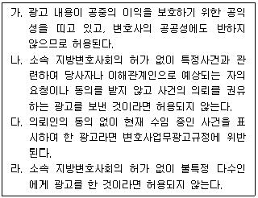
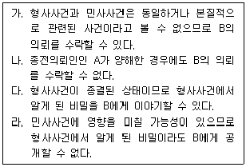

법조윤리 (2013-08-10 기출문제)
1과목: 임의 구분
1. 다음 설명 중 옳지 않은 것은?
- 변호사는 수임사건의 상대방에 변호사가 선임되어 있는 경우에는 특별한 사정이 없으면 상대방 본인과 직접 접촉하여서는 아니 된다.
- 변호사는 수임하고 있는 사건에 관하여 상대방으로부터 이익을 받거나 이를 요구 또는 약속해서는 안 되며, 이에 위반한 행위는 형사처벌의 대상이 된다.
- 변호사는 의뢰인이 이미 다른 변호사를 선임한 사건을 수임할 때에는 그 다른 변호사의 양해를 구해야 한다.
- 공탁금, 보증금 기타 보관금 등을 성공보수로 전환하는 것은 이를 서면으로 명백히 약정하더라도 사실상 변호사가 성공보수를 미리 수령하는 행위에 해당하므로 허용되지 아니한다.
(정답률: 알수없음)

2. 변호사 甲은 법률사무소를 기업처럼 운영함이 현실적이라고 생각하여 다음의 방법으로 운영하고 있다. 이 중 형사처벌의 대상이 되는 것은?
- 변호사법위반죄로 징역 1년을 선고받고 그 집행이 끝난 지 1년이 지나지 않은 사람이 사무직원으로 지원하자 사건 유치에 능하다는 점만을 생각하고 직원으로 채용하였다.
- 사건을 소개해 준 사람들 중 변호사가 아닌 사람에 한해서 보수 중 일정 비율을 소개료로 지급하고 있다.
- 주사무실은 법원 근처에 있으나 30㎞ 정도 떨어진 시장의 상인들을 고객으로 유치하기 위하여 시장 내에 연락사무소를 두고 있다.
- 사건을 유치하기 위하여 직원들에게 경찰서 유치장과 교통사고 환자 전병원에 출입하도록 독려하고 있다.
(정답률: 알수없음)
3. 태풍주의보가 내려진 상태에서 바다를 운항하던 여객선이 암초와 충돌하여 많은 사람들이 죽거나 다쳤다는 보도를 본 변호사 甲은 부상자 명단 중 과거 의뢰인이 있음을 확인한 후 그를 집으로 찾아가서 만났다. 변호사 甲의 행위에 관한 설명 중 옳지 않은 것은?
- 의뢰인의 요청으로 방문하여 손해배상청구 소송을 권유하는 것은 가능하다.
- 의뢰인의 요청이 없이 방문한 경우에는 소속 지방변호사회의 허가를 받았어도 손해배상청구 사건의 의뢰를 권유할 수 없다.
- 의뢰인에게 소송제기를 할 경우의 승소가능성에 대한 상담을 해주었는데, 후일 의뢰인이 변호사 甲의 사무실을 방문하여 사건을 의뢰하였다면 변호사업무광고규정에 위반되지 않는다.
- 의뢰인과 상담 후, 다른 피해자들에 대해서도 법률상담을 해주겠다며 소개시켜 달라고 하였다면 변호사업무광고규정에 위반되지 않는다.
(정답률: 알수없음)
4. 형사변호사의 윤리에 관한 설명으로 옳은 것을 모두 고른 것은? (다툼이 있는 경우 판례에 따름)

- 가, 나, 라
- 나, 다
- 나, 다, 라
- 다, 라
(정답률: 알수없음)
5. 다음 중 변호사법 또는 변호사윤리장전에 위반되는 경우를 모두 고른 것은?

- 가, 나, 다
- 가, 나, 라
- 가, 라
- 나, 다
(정답률: 알수없음)
6. 변호사 甲은 소유권이전등기청구 사건의 원고 소송대리인의 복대리인이 되었다. 그 후 변호사 甲은 위 사건의 항소심에서 피고의 소송대리인으로 선임되어 소송수행을 하던 중 항소심 변론종결 후에 사임하였다. 피고 패소판결 후, 피고는 새로운 변호사를 선임하여 상고하였다. 피고는 상고이유서에서 비로소 변호사 甲이 항소심에서 변호사법상 수임제한 규정을 위반하였으므로 그 소송행위가 무효라고 주장하였다. 이와 관련된 설명 중 옳은 것은? (다툼이 있는 경우 판례에 따름)
- 변호사 甲은 제1심에서 원고로부터 사건을 수임한 바 없이 단지 소송복대리인으로만 관여하였기에 수임제한 규정을 위반한 것은 아니다.
- 변호사 甲이 항소심에서 피고 소송대리인으로 소송수행을 한 행위는 설령 원고가 항소심 도중 이의를 제기하였더라도 유효하다.
- 변호사 甲이 항소심의 변론종결 후에 사임하였기에 수임제한 규정을 위반한 것은 아니다.
- 피고가 상고이유서에서 변호사 甲의 항소심에서의 소송행위가 무효라는 주장을 하였을지라도 변호사 甲의 항소심에서의 소송행위는 유효하다.
(정답률: 알수없음)
7. 외국법자문사와 관련된 설명 중 옳은 것은?
- 미국 뉴욕 주에서 변호사 자격을 취득한 자가 뉴욕에서 법률사무소를 운영하면서 외국법자문사 등록을 하고 서울에 외국법자문법률사무소를 설립하는 것은 2개 이상의 외국법자문법률사무소를 설치한 것에 해당된다.
- 외국법자문사로서 업무 수행을 하려는 사람은 법무부에서 자격승인과 함께 외국법자문사 등록을 하여야 한다.
- 외국법자문사는 업무에 관하여 담당공무원과의 연고 등 사적인 관계를 드러내며 영향력을 미칠 수 있는 것으로 선전하여서는 아니 된다.
- 법무부장관은 본점사무소가 자유무역협정등의 당사국에서 그 나라의 법률에 따라 적법하게 설립되어 5년 이상 정상적으로 운영되었을 것이라는 요건만 충족되면, 외국법자문법률사무소를 인가할 수 있다.
(정답률: 알수없음)
8. 대한변호사협회와 관련된 설명 중 옳지 않은 것은?
- 대한변호사협회는 변호사법에 의하여 설립된 지방변호사회로 구성한다.
- 대한변호사협회는 변호사의 품위보전과 자질향상 등을 설립목적으로 한다.
- 개업신고를 하지 아니한 변호사는 대한변호사협회의 지도·감독에 관한 규정을 적용받지 아니한다.
- 대한변호사협회의 개인회원은 개업신고를 한 변호사와 외국법자문사법에 따라 대한변호사협회에 등록한 외국법자문사로 한다.
(정답률: 알수없음)
9. 변호사의 비밀유지의무에 위반되지 않는 경우는?
- 외국계 은행의 외자유치를 위한 프로젝트 작성을 의뢰받은 법률사무소가 그 은행의 동의를 얻어 일체의 영서류 작성을 전문번역업체에 의뢰하여 번역하게 한 후, 다시 그 서류들을 검토하여 은행에 제출한 경우
- 동업자들이 운영하는 회사에 대한 법률고문계약을 체결한 변호사가 경영권 분쟁 발생 후에 일방 동업자가 다른 동업자에 대하여 제기한 소송에서 일방 동업자를 대리하면서 회사 자과정에서 알게 된 회사의 비밀을 이용하는 경우
- 소유권이전등기청구 사건의 원고 대리인이었던 변호사가 소송 종료 후 피고가 다시 원고를 상대로 제기한 청산금청구소송에서 담당 재판부로부터 소유권이전등기청구 사건의 수임 경위 및 그 내용에 대한 사실조회를 받고 회신하는 경우
- 공정거래위원회 소속 공무원이 조사 대상 회사 법률고문인 법무법인에 대하여 직무수행상 필요하다는 이유로 법률자관계 서류의 제출을 요구하자 그 법무법인이 이를 제출한 경우
(정답률: 알수없음)
10. 변호사의 연수교육에 관한 설명 중 옳지 않은 것은?
- 변호사는 원칙적으로 대한변호사협회가 실시하는 연수교육을 받아야 하는데, 의무연수 이수시간은 1년에 법조윤리과목 1시간 이상을 포함하여 8시간 이상으로 하되, 연수주기는 매 홀수연도의 1월 1일부터 그 다음 해의 12월 31일까지 2년으로 한다.
- 변호사 자격 취득 후 판사, 검사, 군법무관 및 공익법무관, 사내변호사, 기타 법률사무소에 종사한 경력이 3년 미만인 신규 변호사는 대한변호사협회가 정한 8시간의 연수를 변호사 자격을 등록한 해에 일반적 의무연수 이외에 추가로 이수하여야 한다.
- 변호사연수는 일반연수와 특별연수로 하는데, 특별연수는 희망하는 변호사만을 대상으로 실시한다.
- 질병이나 출산 등으로 인하여 연수교육을 받지 못할 정당한 사유가 있는 변호사의 신청이 있는 경우 변호사연수원운영위원회의 심의를 거쳐 대한변호사협회의 장이 그 의무의 전부 또는 일부를 면제 또는 유예할 수 있다.
(정답률: 알수없음)
11. 변호사의 광고와 관련된 설명 중 옳지 않은 것은?
- 변호사는 대한변호사협회에서 자격등록신청이 수리되기 전에 미리 변호사업무에 관한 광고행위를 하여서는 아니 된다.
- 변호사는 다른 목적을 위한 광고를 하는 경우에 변호사업무에 관한 광고와 동시에 또는 연결하여 할 수 있다.
- 변호사는 유료 또는 무료 법률상담에 관한 사항을 광고할 수 있으며, 법률상담방식에 의한 광고도 할 수 있다.
- 변호사는 광고 속에 자신의 성명 또는 명칭을 표시하고, 공동으로 광고할 때에는 대표자의 성명 또는 명칭을 명시하여야 한다.
(정답률: 알수없음)
12. 변호사와 의뢰인의 관계에 대한 설명 중 옳지 않은 것은? (다툼이 있는 경우 판례에 따름)
- 소송위임(수권행위)은 소송대리권의 발생이라는 소송법상의 효과를 목적으로 하는 단독 소송행위로서 그 기초관계인 의뢰인과 변호사 사이의 사법상의 위임계약과는 성격을 달리한다.
- 본안소송을 수임한 변호사는 그 소송을 수행함에 있어 강제집행이나 보전처분에 관한 소송행위를 할 수 있는 소송대리권을 가지는 경우, 의뢰인에 대한 관계에서 당연히 그 권한에 상응한 위임계약상의 의무를 부담한다.
- 수임사건에 대한 패소판결을 받은 변호사는 의뢰인으로부터 상소에 관하여 특별한 수권이 없는 때에도 그 판결을 검토하여 의뢰인에게 불리한 판결의 내용과 상소할 때의 승소가능성 등에 대하여 구체적으로 설명하고 조언하여야 할 의무가 있다.
- 피사취수표와 관련한 본안소송을 위임받은 변호사는 비록 사고신고담보금에 대한 권리 보전조치의 위임을 별도로 받은 바 없다고 하더라도, 위임받은 소송업무를 수행함에 있어서 사고신고담보금이 예치된 사실을 알게 되었다면 법률전문가의 입장에서 승소판결금을 회수하는 데 있어 매우 실효성이 있는 방안을 위임인에게 설명하고 필요한 정보를 제공하여 위임인이 그 회수를 위하여 필요한 수단을 구체적으로 강구하기 위한 법률적인 조언을 하여야 할 보호의무가 있다.
(정답률: 알수없음)
13. 변호사의 업무제한 및 겸직제한에 관한 설명 중 옳지 않은 것은?
- 변호사가 휴업한 경우에는 소속 지방변호사회의 겸직허가를 받지 않더라도 주식회사의 이사가 될 수 있다.
- 법무법인의 구성원 변호사는 소속 지방변호사회의 겸직허가를 받지 않더라도 지방의회 의원이 될 수 있다.
- 법무법인의 구성원이 아닌 소속 변호사는 법무법인에서 사직한 후라면, 그 법무법인 소속기간 중 그 법인이 수임을 승낙한 사건에 대하여 변호사업무를 수행할 수 있다.
- 사내변호사를 고용한 회사가 그 회사의 송무사건 뿐 아니라 일반인으로부터 사건을 수임하여 사내변호사에게 소송대리 업무를 수행토록 하는 것은 허용되지 아니한다.
(정답률: 알수없음)
14. 변호사윤리장전상 법원 등에 대한 변호사의 윤리와 관련한 설명 중 옳지 않은 것은?
- 변호사는 법정의 내외를 불문하고 법원의 위신이나 재판의 신뢰성을 손상시키는 언동을 하여서는 아니 되며 사법권의 존중에 특히 유의하여야 한다.
- 변호사는 재판시간과 서류의 제출 기타의 기한을 준수하고 소송지연을 목적으로 하는 행위를 하여서는 아니 된다.
- 변호사는 법정에서 사건 진행의 순서를 다투어서는 아니 되며 특별한 사정이 있을 때에는 재판장의 허가를 받아야 한다.
- 변호사는 법정 주위에서 자신의 의뢰인이 상대방에게 모욕적 언사를 쓰는 경우 이를 방임하여서는 아니 된다.
(정답률: 알수없음)
15. 이혼사건 전문변호사로 명성이 높은 변호사 甲은 틈이 나는 대로 시민단체에서 운영하는 무료법률상담 활동을 하고 있다. 하루는 A가 와서 사실혼 관계의 파혼에 관해서 상담을 하면서 자신의 비밀을 상당 부분 공개하였다. 변호사 甲은 A로부터 위 사건을 수임하되, 수임료는 일주일 뒤에 받기로 하였다. 그런데 며칠 뒤 B와 사실혼 관계의 파혼에 관한 무료법률상담을 하던 도중 B가 A의 사실혼 관계 배우자라는 것을 알게 되었다. 이 경우 변호사 甲의 행동에 대한 설명으로 옳은 것은?
- 변호사 甲은 이미 A와 수임계약을 체결하였으므로 B와의 상담을 중지해야 한다.
- 변호사 甲은 B와 법률상담을 시작한 이상, B와 상담을 계속하여야 한다.
- 변호사 甲은 A로부터 수임료를 받지 않은 이상, 다시 B와 상담하는 데 아무런 문제가 없다.
- 변호사 甲은 B에게 A와의 상담 사실을 알려주고 그래도 상담을 계속 원하는지 확인해야 하고, 만약 B가 동의한다면 그때 비로소 상담을 계속할 수 있다.
(정답률: 알수없음)
16. 변호사 甲이 법률사무소의 사무직원 채용 공고를 냈더니 4명이 지원하였다. 변호사법상 甲이 사무직원으로 채용할 수 없는 사람은?
- 시청 9급 공무원으로 재직 중 민원인에게서 현금 200만 원을 받은 사실이 드러나 뇌물죄로 기소되어 징역 10월의 형을 선고받고 복역하였다가 만기출소 후 2년 10개월이 경과한 A
- 검찰공무원 재직 중 성추행으로 징계를 받아 해임된 후 3년이 경과한 B
- 흉기를 휴대하여 사람을 협박하였다는 내용으로 ｢폭력행위 등 처벌에 관한 법률｣ 제3조 위반으로 선고유예를 선고받고 유예기간 중인 C
- 금융회사 임직원의 직무에 속하는 사항의 알선에 관하여 금품을 수수하였다는 내용으로 특정경제범죄가중처벌등에관한법률위반죄로 징역 1년에 집행유예 2년을 선고받고 집행유예 판결 확정일부터 3년 2개월이 경과한 D
(정답률: 알수없음)
17. 지방변호사회와 대한변호사협회에 관한 설명 중 옳지 않은 것은?
- 지방변호사회와 대한변호사협회의 총회 결의는 법무부장관에게 보고하고 인가를 받아야 한다.
- 지방변호사회는 회원들의 경력·업무실적 등에 관한 정보를 변호사를 선임하려는 자에게 제공하여야 한다.
- 지방변호사회와 대한변호사협회가 회칙을 변경한 때에는 법무부장관의 인가를 받아야 한다.
- 지방변호사회는 그 회원인 변호사 상호간에 직무상 분쟁이 있으면 당사자의 청구에 의하여 이를 조정할 수 있다.
(정답률: 알수없음)
18. B는 “A가 B와 말다툼을 하면서 B를 밀쳐 전치 3주의 상해를 가하였다.”라는 내용으로 A를 고소하였다. A는 위 상해 사건으로 1심 재판을 받던 중, 변호사 甲에게 변호를 의뢰하였다. 변호사 甲은 A로부터 이 사건의 경위가 “A가 B에게 1,000만 원을 빌려주었다가 변제받지 못해 B에게 변제독촉을 하였으나, 오히려 B로부터 주변 사람들에게 빌린 돈도 아직 갚지 못해 당장 갚을 수 없으니 마음대로 하라는 답변을 듣게 되자 A와 B는 서로 언성을 높이고 말다툼을 하였는데, 그 과정에서 B를 밀친 사실이 없고 B 스스로 흥분에 못 이겨 넘어진 것이며, B가 자신을 고소한 이유는 상해 사건의 합의를 핑계로 차용금을 갚지 않기 위한 것이다.”라는 말을 듣고 이와 관련된 증빙자료도 확인하였다. 이에 변호사 甲은 A를 설득하여 B를 사기죄로 고소하였고, B의 사기 사건과 A의 상해 사건은 같은 재판부에서 병합심리를 받게 되었다. 재판 과정에서 검사는 B의 사기 사건에서 B를 피고인신문하면서 A에게 폭행을 당해 상해를 입은 사실도 함께 신문하였고, B는 A가 자신을 폭행하여 상해를 입은 것이 맞다는 취지로 진술하였다. 또한 검사는 B에 대한 피의자신문조서도 증거로 제출하면서, 그 신문조서에 기재되어 있는 A가 B를 폭행하여 상해를 가하였다는 B의 피해 진술을 토대로 재판부에 A의 상해 사건은 유죄임이 분명하다고 주장하고 있다. 이에 대한 설명 중 옳은 것은?
- 변호사는 범죄혐의가 확실한 사건만 고소 또는 고발하도록 종용할 수 있으므로, B에 대한 사기범죄 혐의가 확실하지 않은 상황에서 변호사 甲이 A에게 B를 고소하도록 종용한 것은 변호사윤리장전에 위반되는 행위이다.
- B는 A의 상해 사건에 대하여 증인의 지위에 있기 때문에 선서 없이 한 B의 법정진술은 A의 공소사실을 인정할 증거로 사용할 수 없고, 또한 B에 대한 피의자신문조서도 A가 동의하지 않는 한 A의 공소사실에 대한 증거로 사용할 수 없으므로, 변호사 甲이 A에게 그러한 법리를 설명한 후, 검사 제출 증거를 배척하는 방향으로 사건을 진행하자고 조언하는 것은 의뢰인을 위한 성실한 변호활동이다.
- A의 공소사실을 입증하기 위해 검사가 제출한 증거는 증거법상 다툼의 여지가 없고, 검사 제출 증거에 대하여 다툴 수 있는 방법이 없으므로 변호사 甲은 위와 같은 법리를 A에게 설명하고, B가 인격적으로 상당히 문제가 있는 사람임을 강조하여 그 진술의 신빙성을 탄핵하는 방향으로 사건을 진행하자고 권유하여야 한다.
- B는 A의 상해 사건에 대해서는 증인의 지위에 있기 때문에 선서 없이 한 B의 법정진술은 A의 공소사실을 인정하는 증거로 사용할 수 없으나, B에 대한 피의자신문조서는 A의 동의와 상관없이 A의 공소사실에 대한 증거가 되므로 변호사 甲은 A에게 B가 수사기관의 회유와 협박에 의해 부당하게 조사에 협조한 것이라는 취지로 다투어 보자고 조언하는 것이 타당한 변호활동이다.
(정답률: 알수없음)
19. 법무법인(유한)과 법무조합에 관련된 설명 중 옳은 것은?
- 법무법인(유한)에는 변호사인 감사를 한 명 이상 두어야 한다.
- 법무법인(유한)의 담당 변호사는 지정된 업무를 수행할 때에 공동으로 그 법무법인(유한)을 대표한다.
- 법무부장관은 법무조합이 업무 집행에 관하여 법령을 위반한 경우에는 설립인가를 취소할 수 있다.
- 법무조합은 그 주사무소의 소재지에서 설립등기를 함으로써 성립한다.
(정답률: 알수없음)
20. 법조윤리협의회와 관련된 설명 중 옳은 것은?
- 법조윤리협의회는 ｢인사청문회법｣에 따른 인사청문회 또는 ｢국정감사 및 조사에 관한 법률｣에 따른 국정조사를 위하여 국회의 요구가 있을 경우에는 공직퇴임변호사 및 특정변호사로부터 제출받은 변호사법 소정의 자료를 국회에 제출하여야 한다.
- 법조윤리협의회의 위원장은 위원 중에서 대한변호사협회의 장이 지명한다.
- 법조윤리협의회의 위원장은 공직퇴임변호사에 한하여 징계사유나 위법의 혐의가 있는 것을 발견하였을 때에는 그 변호사에 대한 징계개시를 신청하거나 수사를 의뢰할 수 있다.
- 공직퇴임변호사는 퇴직일부터 2년 동안 수임한 사건에 관한 수임 자료와 처리 결과를 법조윤리협의회에 제출하여야 한다.
(정답률: 알수없음)
2과목: 임의 구분
21. 변호사 甲은 X 아파트 거주자인 A로부터 그 아파트 인근의 Y 회사에서 배출되는 오염물질로 호흡기 질환을 앓고 있다는 이야기를 듣고 Y 회사를 상대로 하는 손해배상청구 사건을 수임하였다. 또한 변호사 甲은 X 아파트의 다른 입주자들로부터도 사건을 수임하기 위하여 “Y 회사를 상대로 오염물질로 인한 호흡기 질환을 원인으로 하는 손해배상청구 사건을 A로부터 수임하여 진행 중이니 소송에 동참해 달라.”는 내용의 유인물을 만들어 X 아파트 각 세대 우편함에 투입하였다. 변호사 甲의 행동에 대한 평가로서 옳은 것을 모두 고른 것은?

- 가, 나
- 가, 라
- 나, 다
- 나, 다, 라
(정답률: 알수없음)
22. 변호사보수청구권에 관한 다음 설명 중 옳지 않은 것은? (다툼이 있는 경우 판례에 따름)
- 변호사 보수는 약정된 보수액이 부당하게 과다하여 신의성실의 원칙이나 형평의 원칙에 반한다고 볼 만한 특별한 사정이 있는 경우에는 예외적으로 상당하다고 인정되는 범위 내의 보수액만을 청구할 수 있다.
- 변호사에게 공동당사자로서 소송대리를 위임한 소송사건의 결과에 따라 경제적 이익을 불가분적으로 향유하게 되거나 패소할 경우 소송 상대방에 대하여 부진정연대관계의 채무를 부담하게 되는 때에는 공동당사자들의 변호사에 대한 소송대리위임에 따른 보수금지급채무는 당연히 연대채무 또는 불가분채무에 해당한다.
- 성공보수 약정이 제1심에 대한 것으로 인정되는 이상, 보수금의 지급시기에 관하여 당사자 사이에 특약이 없는 한, 심급대리의 원칙에 따라 수임한 소송사무가 종료하는 시기인 제1심 판결을 송달받은 때부터 그 소멸시효 기간이 진행된다.
- 변호사가 소송사건을 수임하면서 지급받는 착수금은 일반적으로 위임사무의 처리비용 외에 보수금 중 일부를 선급금으로 지급받는 성질의 금원이다.
(정답률: 알수없음)
23. 변호사 甲은 임대인 A를 대리하여 공동임차인 B와 C를 상대로 건물인도소송을 진행 중이다. 그런데 B와 C 사이에 분쟁이 발생하여 B가 C를 상대로 대여금청구의 소를 제기하면서 변호사 甲에게 위임하고자 한다. 이에 대한 설명으로 옳은 것은?
- A와 C의 동의를 얻더라도 B가 위임하는 소송을 수임할 수 없다.
- B가 위임하는 소송을 수임하기 위해서는 A와 C의 동의를 얻어야 한다.
- B가 위임하는 소송을 수임하기 위해서는 법원의 허가를 얻어야 한다.
- B가 위임하는 소송을 수임하기 위해서는 A의 동의를 얻어야 한다.
(정답률: 알수없음)
24. 다음 중 변호사의 비밀유지의무에 위반된 행위에 해당되는 것은?
- 변호사 甲이 변호사를 그만둔 후 쓴 자서전에서 의뢰인의 비밀을 공개하였다.
- 변호사 乙이 의뢰인의 동의를 얻어 의뢰인의 비밀을 공개하였다.
- 변호사 丙이 자신의 권리 옹호를 위해 필요하여 최소한의 범위에서 의뢰인의 비밀을 공개하였다.
- 변호사 丁은 직무상 알게 된 비밀이 아닌 내용을 공개하였다.
(정답률: 알수없음)
25. 변호사에 대한 업무정지명령과 관련된 설명 중 옳지 않은 것은?
- 법무부장관은 변호사에 대하여 약식명령이 청구된 경우와 과실범으로 공소제기된 경우에는 업무정지에 관한 결정을 청구할 수 없다.
- 업무정지결정이 청구된 변호사는 변호사 또는 학식과 경험이 있는 자를 특별변호인으로 선임하여 업무정지명령 청구사건에 대한 보충 진술과 증거 제출을 하게 할 수 있다.
- 대한변호사협회의 장, 검찰총장 또는 업무정지명령을 받은 변호사는 법무부 변호사징계위원회에 업무정지명령의 해제를 신청할 수 있다.
- 업무정지명령에 불복하려는 변호사는 그 통지를 받은 날부터 90일 이내에 행정법원에 소를 제기할 수 있다.
(정답률: 알수없음)
26. 법무법인과 관련된 설명 중 옳지 않은 것은? (다툼이 있는 경우 판례에 따름)
- 구성원 변호사로 등기된 자라도 이익배당을 받은 바 없고 법무법인에 대하여 임금을 목적으로 종속적인 관계에서 근로를 제공하였다면, 법무법인에 대한 관계에서 근로자의 지위에 있다고 볼 수 있다.
- 법무법인의 구성원이 변호사법에 따라 정직 6개월의 징계처분을 받은 경우 구성원에서 당연히 탈퇴한다.
- 법무법인의 담당변호사로 지정된 자의 과실로 의뢰인에게 손해가 발생한 경우, 구성원 변호사 전원과 법무법인은 연대하여 변제할 책임이 있다.
- 법무법인이 다른 법무법인과 합병하거나 법무법인(유한) 또는 법무조합으로 조직변경을 하기 위해서는 구성원 전원의 동의가 필요하다.
(정답률: 알수없음)
27. 변호사 甲은 항소 기간의 도과와 불성실 변론, 의뢰인의 공탁금 횡령 및 국세체납 등의 혐의로 대한변호사협회 변호사징계위원회로부터 정직 2년의 징계를 받게 되었다. 아울러 공탁금 횡령 혐의로 기소되어 징역 1년을 선고받아 그 형이 확정되었다. 이와 관련된 설명 중 옳지 않은 것은?
- 변호사 甲은 정직 2년의 기간이 지나면 대한변호사협회에 재등록하여 변호사 직무를 수행할 수 있다.
- 법무부장관은 변호사 甲에 대하여 대한변호사협회에 그 변호사의 등록취소를 명하여야 한다.
- 변호사 甲은 정직 2년의 징계처분을 다투기 위하여 이의신청을 거쳐 행정소송을 제기할 수 있다.
- 대한변호사협회의 장은 변호사 甲에 대한 정직처분 사실을 지체 없이 대한변호사협회가 운영하는 인터넷 홈페이지에 3개월 이상 게재하는 등 공개하여야 한다.
(정답률: 알수없음)
28. 변호사와 의뢰인의 관계에 관한 설명 중 옳지 않은 것은? (다툼이 있는 경우 판례에 따름)
- 변호사는 위임인의 승낙이나 부득이한 사유 없이는 제3자로 하여금 자기에 갈음하여 위임사무를 처리하게 할 수 없으므로, 변호사가 복대리인을 선임하려는 경우에도 위임인의 승낙이 있거나 부득이한 사유가 있어야 한다.
- 피고인이 법인인 형사사건에서 그 법인의 대표이사가 변호인을 선임하는 경우에 그 선임권을 제3자에게 위임하여 그 제3자로 하여금 변호인을 선임하게 할 수 있다.
- 변호사에게 계쟁사건의 처리를 위임하면서 보수의 지급 여부나 그 수액에 관하여 명시적인 약정을 하지 않았을 경우에는 무보수로 한다는 특별한 약정이 없는 한 응분의 보수를 지급한다는 묵시적 약정이 있는 것으로 해석된다.
- 변호사는 언제든지 의뢰인과의 법률사무처리 위임계약을 해지할 수 있으나, 부득이한 사유 없이 의뢰인이 불리한 시기에 그 위임계약을 해지한 때에는 그 손해를 배상하여야 한다.
(정답률: 알수없음)
29. 다음 중 변호사법에 위반되지 않는 것은?
- 변호사가 수사기관에서 내사 중인 사건에 대하여 변호인 선임서를 제출하지 아니하고 변호인 명의로 의견서를 제출한 경우
- 변호사가 수임료를 지불할 경제적 능력이 없는 당사자를 위해 상당한 대가를 지급하고 그 계쟁권리를 양수받아 소송을 수행한 경우
- 법무법인 소속 변호사가 원고 소송대리인으로 소송을 진행하던 중 그 법무법인을 사직하고 원고 소송대리인 사임서를 제출한 후 개인 변호사 자격으로 원고 소송대리를 하는 경우
- 변호사 甲과 乙이 변호사 업무수행 시 통일된 형태를 갖추고 수익과 비용을 똑같이 나누는 공동법률사무소를 운영하고 있는 상황에서 변호사 甲이 검사 재직 시절 수사·기소했던 A의 피의사건을 변호사 乙이 수임하는 경우
(정답률: 알수없음)
30. 개업 중인 변호사의 겸직제한에 대한 설명 중 옳지 않은 것은?
- 소속 지방변호사회의 허가 없이 서적판매업을 경영하였다. 이는 겸직제한규정을 위반한 것이다.
- 공공기관에서 위촉한 업무를 보수를 받고 수행하였다. 이는 겸직제한규정을 위반한 것이다.
- 소속 지방변호사회의 허가 없이 법무법인·법무법인(유한) 또는 법무조합의 구성원이 되었다. 이는 겸직제한규정을 위반한 것이 아니다.
- 휴업한 후 소속 지방변호사회의 허가 없이 주점을 경영하였다. 이는 겸직제한규정을 위반한 것이 아니다.
(정답률: 알수없음)
31. 법관 甲은 서울중앙지방법원에서 진행 중인 손해배상청구 사건의 원고에게 평소 잘 알고 지내던 고교 후배인 변호사 A를 소개시켜 주어 소송대리에 관한 수임계약을 체결하도록 하였다. 이 사안에 관련된 설명 중 옳지 않은 것은?
- 법관 甲이 손해배상청구 사건의 재판장으로서 직무상 취급중인 손해배상청구 사건에 관하여 변호사 A를 소개하였다면 형사처벌의 대상이 된다.
- 법관 甲은 다른 재판부에 계속 중인 손해배상청구 사건의 원고가 그의 동생인 경우에는 그 사건의 소송대리인 선임을 위하여 변호사 A를 소개하는 행위가 허용된다.
- 법관 甲이 손해배상청구 사건의 재판장인 경우 원활한 소송 진행을 위하여 원고에게 소송대리인을 선임할 수 있도록 변호사 A에 대한 정보를 제공하는 행위는 허용된다.
- 법관 甲이 다른 재판부에 계속 중인 손해배상청구 사건에 관하여 변론 종결한 후에 재판장에게 전화를 하여 원고가 제출한 준비서면을 잘 읽어봐 달라고 부탁하였다면, 다른 법관의 재판에 영향을 미치는 행위에 해당되어 허용되지 아니한다.
(정답률: 알수없음)
32. 변호사의 비밀유지의무에 관한 설명 중 옳지 않은 것은?
- 변호사의 비밀유지의무는 의뢰인에 대한 관계에서는 의무인 반면, 민사소송법이나 형사소송법에서 정한 변호사의 증언거부권, 비밀물건 압수거부권 등은 의뢰인 이외의 제3자와의 관계에서 의뢰인의 비밀공개를 거부할 수 있는 권리이다.
- 변호사윤리장전의 비밀유지의무에 관한 규정에 따르면, 변호사는 의뢰인의 비밀을 공개하여서는 아니 되나 공익상의 이유로 필요한 경우에는 공개할 의무가 있다.
- 의뢰인에 대한 비밀유지의무는 변호사와 의뢰인 사이의 신뢰관계를 형성ㆍ유지하는 것 외에 대립적 당사자주의의 유지를 위하여도 필요하다.
- 사건의 의뢰인이 법무법인 소속의 변호사에게 자신의 비밀을 공개할 때에는 사건의 처리를 위한 범위에서 그 법무법인의 다른 변호사에게 비밀을 공개해도 좋다는 묵시적 동의가 있다고 할 수 있다.
(정답률: 알수없음)
33. 수임하고 있는 사건의 의뢰인이 동의 또는 양해하는 경우 수임할 수 있는 사건이 아닌 것은?
- 의뢰인과 공범관계에 있으면서 서로 이익이 충돌되는 공동피고인이 의뢰하는 당해 사건
- 수임하고 있는 사건의 상대방이 위임하는 다른 사건
- 자신의 동서인 변호사가 수임하고 있는 사건에서 대립되는 당사자가 위임하는 사건
- 자신과 동업약정을 통해 공동으로 법률사무소를 운영하는 변호사가 수임하고 있는 사건의 상대방이 위임하는 다른 사건
(정답률: 알수없음)
34. 다음 중 공직퇴임변호사의 사건 수임이 제한되는 경우는?
- 1년간 광주지방검찰청에서 검사로 근무한 후 3개월간 광주지방검찰청 목포지청의 지청장 직무대리로 근무하다가 퇴직한 지 8개월 만에 광주지방검찰청 순천지청에서 처리하는 사건을 수임하는 경우
- 수원지방법원에서 2년간 민사부 판사로 근무하다가 퇴직한 지 6개월 만에 수원지방법원에 계속 중인, 처남이 피고인인 형사사건을 수임하는 경우
- 대구지방검찰청에 검사로 발령받아 2개월 근무한 후 외교부에 파견되어 10개월간 근무하다가 퇴직한 지 1개월 만에 대구지방법원에 계속된 민사사건을 수임하는 경우
- 국방부 보통군사법원에서 군판사로 근무하다가 퇴직한 지 10개월 만에 국방부 보통검찰부에서 수사 중인 사건을 수임하는 경우
(정답률: 알수없음)
35. 변호사 甲은 A의 국선변호를 맡게 되었는데 A가 “사건이 복잡한데 애쓴다. 얼마 안 되는 돈이지만 감사의 표시로 받고 비용으로도 써달라. 국선변호인이지만 사선변호인처럼 최선을 다해 사건을 처리해 달라.”고 하면서 100만 원을 지급하겠다고 한다. 실제로 이 사건 변론을 진행하면서 증인 면담을 위해 지방에 출장을 다녀오는 등으로 30만 원의 비용 지출이 예상된다. 이 경우 변호사 甲이 취해야 할 행동으로 옳은 것은?
- 100만 원을 모두 거절하여야 한다.
- 100만 원을 모두 거절하여야 할 뿐 아니라, 재판부에 국선변호인 선정의 취소를 요청하여야 한다.
- 100만 원 중 비용에 해당하는 30만 원은 수령할 수 있으나, 나머지 70만 원은 보수이므로 수령하여서는 안 된다.
- 100만 원 중 비용에 해당하는 30만 원은 수령할 수 있으나, 나머지 70만 원을 수령하려면 사선변호인으로서 선임서를 제출하여야 한다.
(정답률: 알수없음)
36. 다음 설명 중 옳지 않은 것은? (다툼이 있는 경우 판례에 따름)
- 법무법인 L이 전직 세무서장 A를 고문으로 영입하여 그 때문에 수임한 소송사건의 수임료를 일정 비율 나누어 주었다면 변호사윤리장전에 위반된다.
- 변호사 甲이 주민들로부터 손해배상청구소송의 위임을 받아오는 대가로 자신의 사무장에게 수임료의 일부를 지급하였다면 변호사법에 위반된다.
- 변호사 甲이 사건의 주선을 업으로 하는 A로부터 사건을 소개 받았다면 소개료를 지급했는지 여부와 관계없이 변호사윤리장전에 위반된다.
- 변호사 甲이 자신의 사무직원에게 소개료를 지급하고 알선을 받은 사건의 수임료는 추징의 대상이 된다.
(정답률: 알수없음)
37. 변호사 甲은 전년도 공익활동 결과를 소속 지방변호사회에 보고하고자 한다. 다음과 같은 변호사 甲의 활동 중 공익활동으로 인정될 수 없는 것은?
- 대한변호사협회가 설립한 법률구조재단에 금원을 기부하였다.
- 대한변호사협회 조사위원으로서 조사위원회에 참석하여 의견을 개진하였다.
- 국선변호인으로 선정된 사건에 대해 변론을 하고 소정의 보수를 수령하였다.
- 법인 파산관재인으로서 법원에서 위촉받은 파산 업무를 처리하고 상당한 보수를 받았다.
(정답률: 알수없음)
38. 변호사와 의뢰인의 관계에 대한 설명 중 옳지 않은 것은?
- 변호사는 민사조정 사건에 있어서는 당사자 쌍방을 대리할 수 있다.
- 변호사는 사건에 대한 개인적인 감정 때문에 성실하게 변론할 수 없는 경우에는 사건을 수임해서는 안 된다.
- 변호사는 의뢰인이 다른 변호사의 참가를 희망할 때 정당한 이유가 있는 경우에는 반대할 수 있다.
- 변호사는 직무수행 중 의뢰인의 행위가 위법행위에 해당된다고 판단된 때에는 즉시 그 협조를 중단하여야 한다.
(정답률: 알수없음)
39. 변호사 甲은 보석절도 사건으로 구속재판을 받고 있는 A의 형사사건을 수임하여 유죄의 확정판결을 받았다. 그 후 위 보석절도 사건의 피해자인 B가 변호사 甲에게 A를 상대로 한 손해배상청구 사건의 소송대리를 요청하였다. 변호사 甲이 취할 수 있는 행동에 관한 설명 중 옳은 것을 모두 고른 것은? (다툼이 있는 경우 판례에 따름)

- 가, 다
- 가, 라
- 나, 다
- 나, 라
(정답률: 알수없음)
40. 변호사의 등록과 취소에 관한 설명 중 옳지 않은 것은?
- 변호사는 대한변호사협회에 등록하지 않고서 변호사 업무를 수행하여서는 아니 된다.
- 대한변호사협회는 징계처분에 의하여 해임된 후 3년이 지나지 아니한 자에 대해서 등록심사위원회의 의결을 거쳐 등록을 거부할 수 있다.
- 대한변호사협회가 등록신청을 받은 날부터 3개월이 지날 때 까지 등록을 하지 아니하면 등록이 거부된 것으로 본다.
- 지방변호사회는 소속 변호사에게 등록취소 사유가 있다고 인정되면 지체 없이 대한변호사협회에 이를 보고하여야 한다.
(정답률: 알수없음)